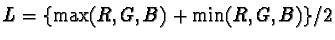

From the previous discussions, it is clear that every color image has
a grayscale component that can be separated out from the hue and
saturation components. There are actually three different functions
in the GIMP for converting an image to grayscale. These are the Grayscale function, the Desaturate function, and the value
component of the HSV option of the Decompose function. To
illustrate these functions, each one is applied to the color image
shown in Figure 5.10(a).
To begin, the most obvious choice for converting a color image to grayscale is to use the Grayscale function found in the Image:Image/Mode menu. This function transforms a 24-bit, three-channel, color image to an 8-bit, single-channel grayscale image by forming a weighted sum of the red, green, and blue components. The formula used in the GIMP is Y = 0.3R + 0.59G + 0.11B; this result is known as luminance (see [4] or [5]). The weights used to compute luminance are related to the monitor's phosphors. The explanation for these weights is due to the fact that for equal amounts of color the eye is most sensitive to green, then red, and then blue. This means that for equal amounts of green and blue light the green will, nevertheless, seem much brighter. Thus, the image obtained by the normal averaging of an image's three color components produces a grayscale brightness that is not perceptually equivalent to the brightness of the original color image. The weighted sum that defines Y, however, does.
The result of converting the color image of Figure 5.10(a) using the Grayscale function is shown in Figure 5.10(b). When you compare it to the two other grayscale images, the Grayscale function does seem the most representative of the color image's brightness.
From previous discussion, the removal of the saturation from an image should also produces a grayscale. One way to desaturate an image is to replace the RGB value for each pixel with that of the closest point on the neutral axis. This point on the neutral axis is illustrated in Figure 5.6. In the GIMP, the Desaturate function, found in the Image:Image/Colors menu, does something like this. Actually, it uses an approximation to this idea; it chooses the point on the neutral axis determined by computing , which corresponds to the definition of lightness. After applying Desaturate, the image remains in RGB space and continues to have three color channels, but now the channels have identical values, which is why the image appears as a grayscale.
The result of applying Desaturate to the color image in Figure 5.10(a) is shown in Figure 5.10(c). Of the three methods for converting an image to grayscale, this one produces the flattest (that is, with the least contrast) and the darkest conversion.
Finally, it is possible to get a slightly different grayscale
conversion by using the HSV option of the Decompose function. This decomposes the
original image into three new images, each an 8-bit grayscale image
representing the hue, saturation, and value components of the image.
The value component is a conversion to grayscale that is based on
moving to the neutral axis by selecting the maximum RGB component.
Thus,
 .
.
Figure 5.10(d) shows the value component of the HSV decomposition for Figure 5.10(a). This grayscale is clearly the brightest of the three, which makes sense because the value is defined as the maximum of the R, G, and B components (see Figure 5.6).
So, which conversion to grayscale is best? I'm tempted to say that Grayscale is best because it produces the result whose brightness is the most perceptually similar to the brightness of the original color image. However, the answer must depend on what you want to do with the image. Furthermore, the two other methods for converting to grayscale are useful, and, in particular, the value component of the Decompose HSV function is used for many operations in the GIMP (for examples, see Sections 6.2.6 and 6.4.4).